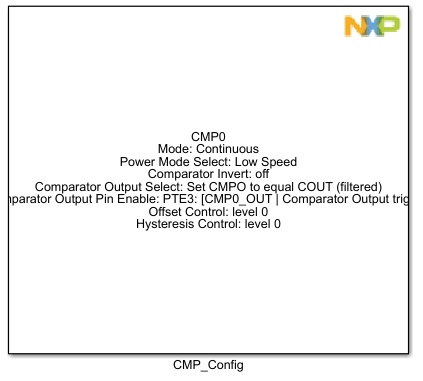
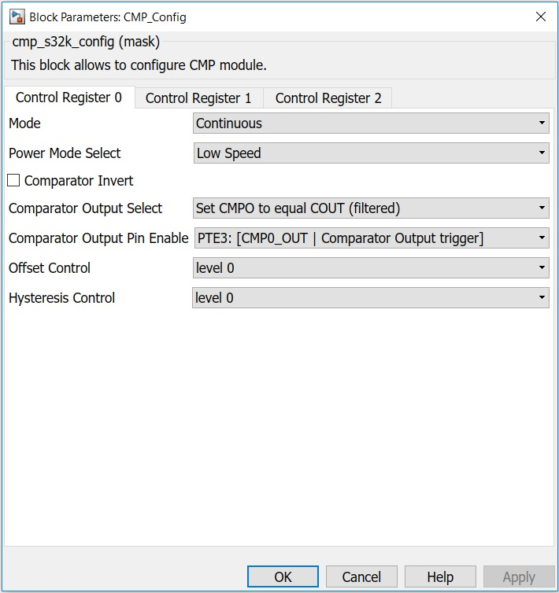
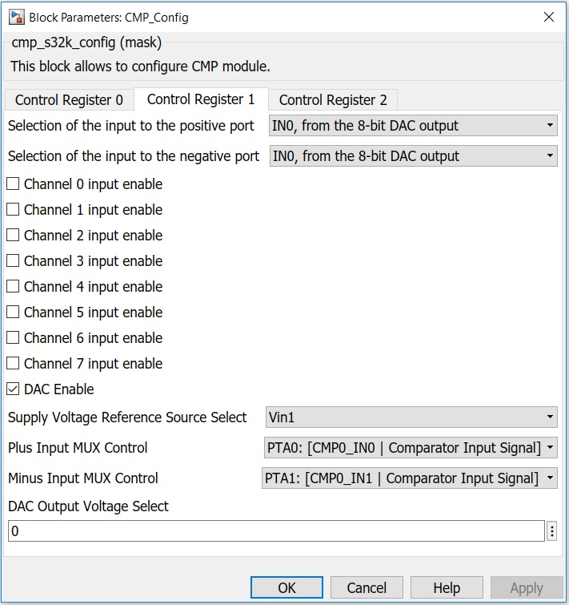
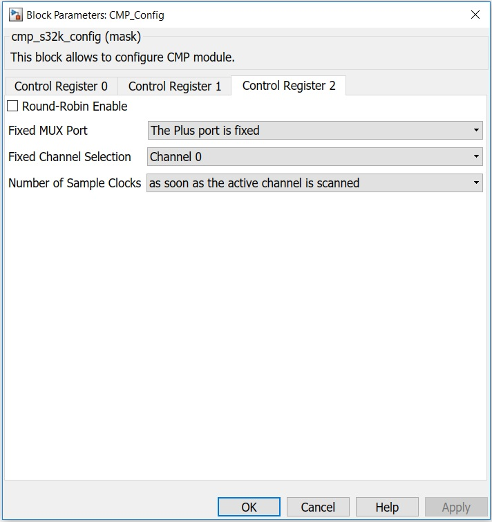

CMP Configuration Block
This block is used to configure the CMP module.
Block Image
Inputs:
- None
Outputs:
- None
Parameters and Dialog Box
The block dialog consists of the following tabs:
Control Register 0
The Control Register 0 tab contains the following parameters:
Comparator Mode
Selects which functional mode to use.
- Continuous
- Sampled Non-Filtered Int Clock
- Sampled Non-Filtered Ext Clock
- Sampled Filtered Int Clock
- Sampled Filtered Ext Clock
- Window
- Windowed Resampled
- Windowed Filtered
See the table below.
Filter Sample Period (0 - 255)
Specifies the sampling period, in bus clock cycles, of the comparator output filter, when C1[SE] = 0. Setting FPR to 0x0 disables the filter. Filter programming and latency details are provided in the CMP functional description. This field has no effect when C0[SE ]= 1. In that case, the external SAMPLE signal is used to determine the sampling period.
Power Mode Select
Selects which power mode to use.
- Low Speed
- High Speed
Comparator INVERT
Allows selection of the polarity of the analog comparator function. It is also driven to the COUT output, on both the device pin and as SCR[COUT], when OPE=0.
Comparator Output Select
Selects the Comparator Output.
- Set CMPO to equal COUT (filtered)
- Set CMPO to equal COUTA (unfiltered)
Comparator Output Pin Enable
The OPE bit enables the path from the comparator output to a selected pin.
- PTA4
- PTE3
Filter Sample Count (1 - 7)
Represents the number of consecutive samples that must agree prior to the comparator ouput filter accepting a new output state.
Offset Control
Comparator hard block offset control. See chip data sheet to get the actual offset value with each level.
- level 0
- level 1
Hysteresis Control
Defines the programmable hysteresis level. The hysteresis values associated with each level are device specific. See the Data Sheet of the device for the exact values.
- 00 - Level 0
- 01 - Level 1
- 10 - Level 2
- 11 - Level 3
| Mode # | C0[EN] | C0[WE] | C0[FILTER_CNT] | C0[FPR] | Operation | |
|---|---|---|---|---|---|---|
| 1 | 0 | x | x | x | x | Disabled |
| 2A | 0 | x | x | 0x00 | x | Continuous Mode |
| 2B | 0 | x | x | x | 0x00 | |
| 3A | 1 | 0 | 1 | 0x01 | x | Sampled Non-Filtered External Clock |
| 3B | 1 | 0 | 0 | 0x01 | > 0x00 | Sampled Non-Filtered Internal Clock |
| 4A | 1 | 0 | 1 | > 0x01 | x | Sampled Filtered External Clock |
| 4B | 1 | 0 | 1 | > 0x01 | > 0x04 | Sampled Filtered Internal Clock |
| 5A | 1 | 1 | 0 | 0x00 | x | Windowed |
| 5B | 1 | 1 | 0 | x | 0x00 | |
| 6 | 1 | 1 | 0 | 0x01 | 0x01-0xFF | Windowed Resampled |
| 7 | 1 | 1 | 0 | > 0x01 | 0x01-0xFF | Windowed Filtered |
| All other combinations of C0[EN], C0[WE], C0[SE], C0[Filter_CNT], and C0[FPR] are illegal. | ||||||
Control Register 1
The Control Register 1 tab contains the following parameters:
Selection of the input to the positive port
Determines which input is selected for the plus input of the comparator.
- IN0, from the 8-bit DAC output
- IN1, from the analog 8-1 mux
Selection of the input to the negative port
Determines which input is selected for the plus input of the comparator.
- IN0, from the 8-bit DAC output
- IN1, from the analog 8-1 mux
Channel 0 input enable
Channel 0 of the input enable for the round-robin checker.
Channel 1 input enable
Channel 1 of the input enable for the round-robin checker.
Channel 2 input enable
Channel 2 of the input enable for the round-robin checker.
Channel 3 input enable
Channel 3 of the input enable for the round-robin checker.
Channel 4 input enable
Channel 4 of the input enable for the round-robin checker.
Channel 5 input enable
Channel 5 of the input enable for the round-robin checker.
Channel 6 input enable
Channel 6 of the input enable for the round-robin checker.
Channel 7 input enable
Channel 7 of the input enable for the round-robin checker.
DAC Enable
This bit is used to enable the DAC. When the DAC is disabled, it is powered down to conserve power.
Supply voltage Ref Source
Selected resistor ladder network supply reference.*
- 0 - Vin1
- 1 - Vin2
Plus Input MUX Control
Determines which input is selected for the plus mux.*
Minus Input MUX Control
Determines which input is selected for the minus mux.*
DAC Output Voltage (0 - 255)
Selects an output voltage from one of 256 distinct levels.
DACO = (V in /256) * (VOSEL[7:0] + 1) , so the DACO range is from V in /256 to V in .
Control Register 2
The Control Register 2 tab contains the following parameters:
Round-Robin Enable
This bit enables the round-robin operation.
Fixed MUX Port
Selects the source for the Sample/Window input.
- The Plus port is fixed
- The Minus port is fixed
Fixed Channel Selection
This field indicates which channel in the mux port is fixed in a given round-robin mode. If FXDACI is set, FXMXCH has no effect.
Number of Sample Clocks
For a given channel, this field specifies how many round-robin clock cycles later the sample takes place.
- as soon as the active channel is scanned
- 1 round-robin clock cycle after the next cycle
- 2 round-robin clock cycles after the next cycle
- 3 round-robin clock cycles after the next cycle
Block Dependency
- None
Block Miscellaneous Details
- None
* Read Hardware Manual documentation to get more information.